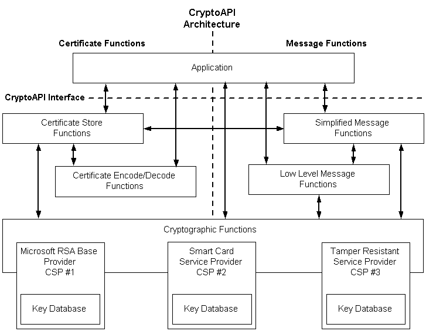

The CryptoAPI system architecture is composed of five major functional areas:
For more information, see Simplified Messages and Simplified Message Functions.

Each of the functional areas has a key word in its function name that indicates its functional area.
| Functional area | Function name convention |
|---|---|
| Base cryptographic functions | Crypt |
| Encoding/decoding functions | Crypt |
| Certificate store functions | Store |
| Simplified message functions | Message |
| Low-level message functions | Msg |
Â
Applications use functions in all of these areas. These functions, taken together, make up CryptoAPI. The base cryptographic functions use the CSPs for the necessary cryptographic algorithms and for the generation and secure storage of cryptographic keys.
Two different kinds of cryptographic keys are used: session keys, which are used for a single encryption/decryption, and public/private key pairs, which are used on a more permanent basis.
[!Note]
Although an application can communicate directly with any of the five functional areas, it cannot communicate directly with a CSP. All application-to-CSP communications occur through the base cryptographic functions. Base cryptographic functions have a parameter that specifies which CSP to use. This parameter can be set to NULL to select a default CSP.
Â
Â
Â